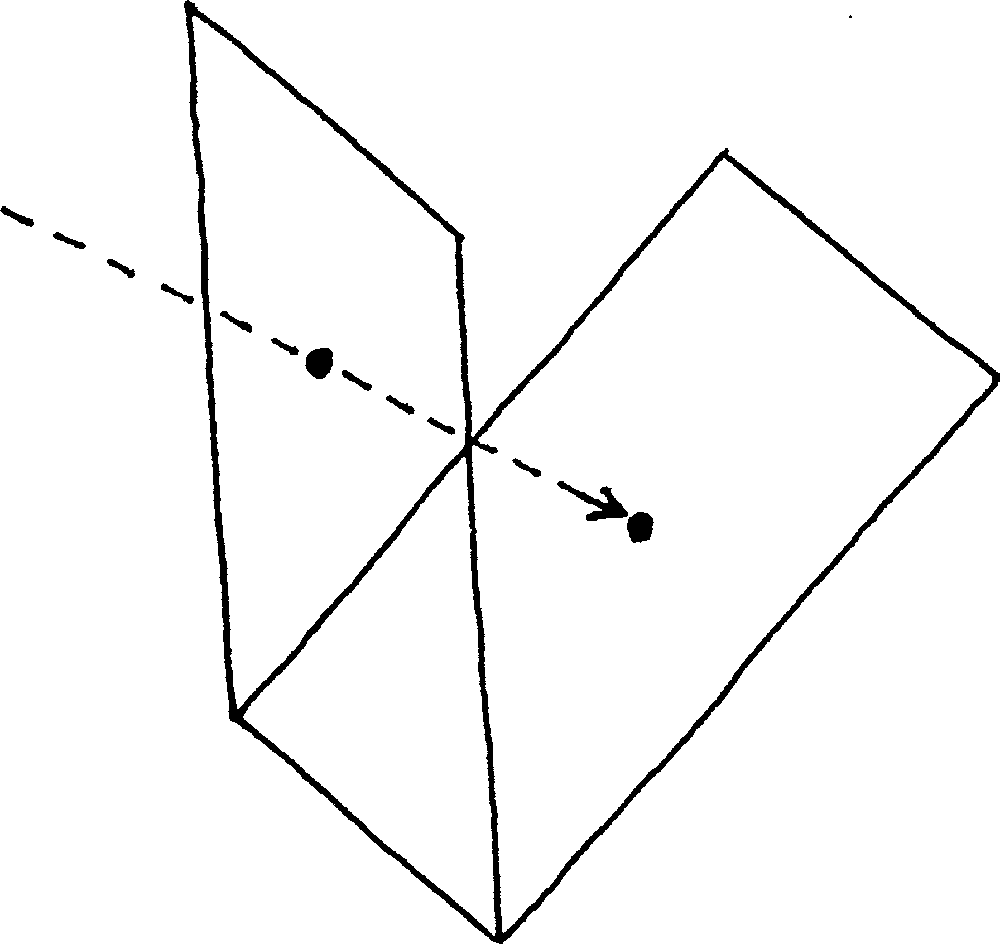
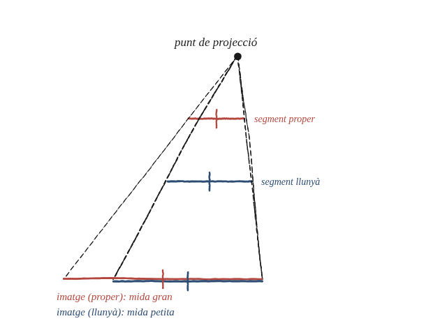

Les projeccions en qualsevol direcció sempre produeixen homotècies?

Què hem de produir
Una resposta de NO, amb un exemple concret de projecció que no sigui una homotècia —és a dir, que no multipliqui totes les longituds pel mateix factor constant.
Hi ha dues maneres de fallar, i la primera ja ha sortit
La Qüestió 91 ja va deixar vist que, fins i tot projectant perpendicularment entre dos plans inclinats, una direcció queda intacta i l'altra s'encongeix per cos θ: això ja no és cap homotècia. La resposta és, doncs, que no, abans i tot de canviar la direcció de projecció. Però hi ha una segona manera de fallar, de naturalesa diferent i val la pena veure-la: què passa si les línies de projecció, en lloc de ser paral·leles entre si, passen totes per un sol punt fix —una "làmpada"?
La construcció
Dos plans, un punt de projecció, i dos segments iguals a diferents distàncies del punt de projecció, projectats sobre el segon pla.

Tancar-ho
En una projecció central, l'ombra d'un segment paral·lel a la pantalla s'amplia per un factor igual a la distància de la làmpada a la pantalla dividida per la distància de la làmpada al segment. O sigui que com més a prop de la làmpada és el segment, més gran surt la seva ombra —és exactament el que es fa amb la mà quan es vol que l'ombra ompli la paret. Si el pla de partida està inclinat, cada tros seu és a una distància diferent de la làmpada i s'amplia pel seu compte. Fixem-nos en la diferència amb la Qüestió 91: allà el factor depenia de la direcció del segment i era el mateix a tot arreu de la figura; aquí depèn d'on és el segment.
No, i de dues maneres diferents. Ja la projecció paral·lela entre dos plans inclinats deixa de ser una homotècia: el factor depèn de la direcció del segment (Qüestió 91), encara que sigui el mateix a tot arreu de la figura. I la projecció central —totes les línies passant per un únic punt— falla d'una altra manera: el factor depèn d'on és el segment, perquè creix a mesura que el segment s'acosta al punt de projecció. La condició que de veritat cal és una de sola, i és sobre els plans, no sobre les línies: els dos plans han de ser paral·lels entre si. Si ho són, tant la projecció paral·lela com la central donen una homotècia —la central amb un factor que depèn de la distància, com es veu a la Qüestió 100. Si no ho són, no en dona cap de les dues.
Comprovació
Làmpada, pantalla a 12 unitats, i dos segments iguals paral·lels a la pantalla: un a distància 2 de la làmpada i l'altre a distància 6. Els factors són 12/2 = 6 i 12/6 = 2. El segment de més a prop surt tres vegades més gran, no més petit. Cap factor únic i, per tant, cap homotècia.
Aquesta distinció —el que decideix si una projecció és una homotècia o no— és exactament la diferència entre un plànol arquitectònic (paral·lela) i una fotografia (central), i és la raó per la qual les línies paral·leles d'una via de tren semblen convergir en una fotografia però no en un plànol.